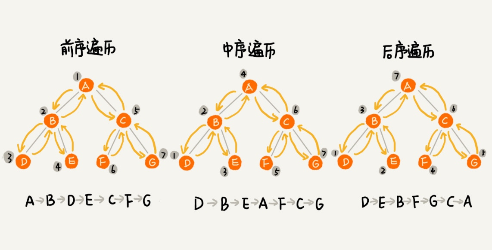

经典的方法有三种，前序遍历、中序遍历和后序遍历。
其中，前、中、后序，表示的是节点与它的左右子树节点遍历打印的先后顺序。
- 前序遍历是指，对于树中的任意节点来说，先打印这个节点，然后再打印它的左子树，最后打印它的右子树。
- 中序遍历是指，对于树中的任意节点来说，先打印它的左子树，然后再打印它本身，最后打印它的右子树。
- 后序遍历是指，对于树中的任意节点来说，先打印它的左子树，然后再打印它的右子树，最后打印这个节点本身。

代码实现
定义一个树节点类
1
2
3
4
5
6
7
8
9
10
11
12
13
14
15
16
17
18
19
20
21
22
23
24
25
26
27
28
29
30
31
32
33
34
| <?php
class TreeNode
{
public $data;
public $left;
public $right;
public function __construct($data = null)
{
$this->data = $data;
$this->left = null;
$this->right = null;
}
}
|
再定义个树类
1
2
3
4
5
6
7
8
9
10
11
12
13
14
15
16
17
18
19
20
21
22
23
24
25
26
27
28
29
30
31
32
33
34
35
36
37
38
39
40
41
42
43
44
45
46
47
48
49
50
51
52
53
54
55
56
57
58
59
60
61
62
63
64
65
66
67
68
69
70
71
72
73
74
75
76
77
78
79
80
81
82
83
84
85
86
87
88
89
90
91
92
93
94
95
96
97
98
99
100
101
102
103
104
105
106
107
108
109
110
111
112
113
114
115
116
117
118
119
120
121
122
123
124
125
126
127
128
129
130
131
132
133
134
135
136
137
138
139
140
141
142
143
144
145
146
147
148
149
150
151
152
153
154
155
156
157
158
159
160
161
162
163
164
165
166
167
168
169
170
171
172
173
174
175
176
177
178
179
180
181
182
183
184
185
186
187
188
189
190
191
192
193
194
195
196
197
198
199
200
201
202
203
204
205
206
207
| <?php
class Tree
{
public $head = null;
public function __construct($headData = null)
{
if ($headData != null) {
$this->head = new TreeNode($headData);
}
}
public function find($data)
{
if ($this->head == null) {
return null;
}
$node = $this->head;
while ($node != null) {
if ($node->data == $data) {
return $node;
} elseif ($data > $node->data) {
$node = $node->right;
} else {
$node = $node->left;
}
}
return null;
}
public function insert($data)
{
if ($this->head == null) {
$this->head = new TreeNode($data);
return true;
}
$node = $this->head;
while ($node != null) {
if ($data > $node->data) {
if ($node->right == null) {
$node->right = new TreeNode($data);
return true;
}
$node = $node->right;
} else {
if ($node->left == null) {
$node->left = new TreeNode($data);
return true;
}
$node = $node->left;
}
}
}
public function delete($data)
{
$node = $this->head;
$pnode = null;
while ($node != null) {
if ($node->data == $data) {
break;
} elseif ($data > $node->data) {
$pnode = $node;
$node = $node->right;
} else {
$pnode = $node;
$node = $node->left;
}
}
if ($node == null) {
return false;
}
if ($node->left != null && $node->right != null) {
$minPP = $node;
$minP = $node->right;
while ($minP->left != null) {
$minPP = $minP;
$minP = $minP->left;
}
$node->data = $minP->data;
$node = $minP;
$minPP->left = null;
}
if ($node->left != null) {
$child = $node->left;
} elseif ($node->right != null) {
$child = $node->right;
} else {
$child = null;
}
if ($pnode == null) {
$node = $child;
} elseif ($pnode->left == $node) {
$pnode->left = $child;
} else {
$pnode->right = $child;
}
}
public function preOrder($node)
{
if ($node == null) {
return;
}
echo $node->data . '->';
$this->preOrder($node->left);
$this->preOrder($node->right);
}
public function inOrder($node)
{
if (empty($node)) {
return;
}
$this->inOrder($node->left);
echo $node->data . ' ';
$this->inOrder($node->right);
}
public function postOrder($node)
{
if (empty($node)) {
return;
}
$this->postOrder($node->left);
$this->postOrder($node->right);
echo $node->data . ' ';
}
public function levelOrder($queue, $index = 0)
{
for ($i = $index; $i < count($queue); $i++) {
$node = $queue[$i];
if ($node->left) {
$queue[] = $node->left;
} else {
return $queue;
}
if ($node->right) {
$queue[] = $node->right;
} else {
return $queue;
}
$index++;
}
return $queue;
}
}
|